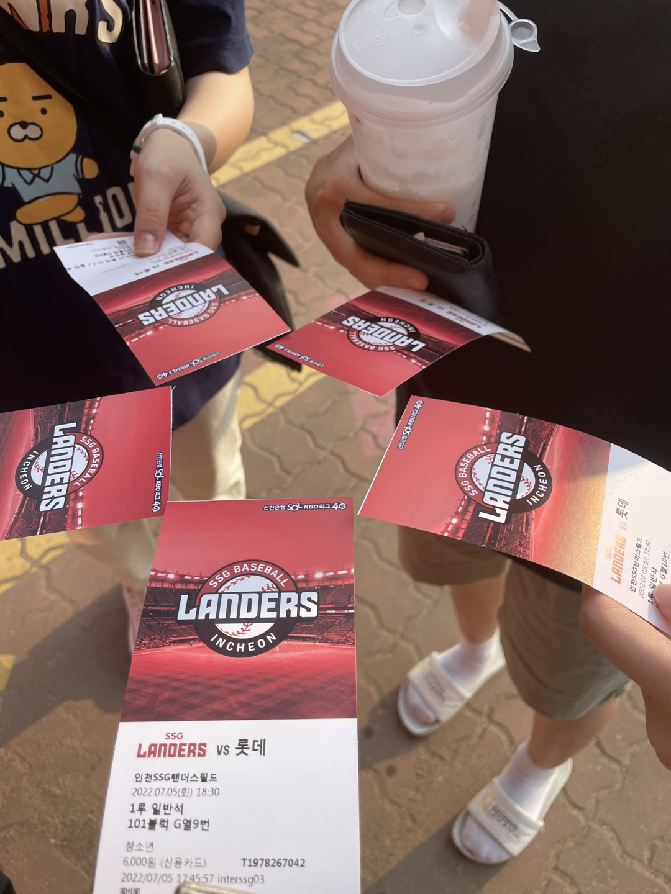
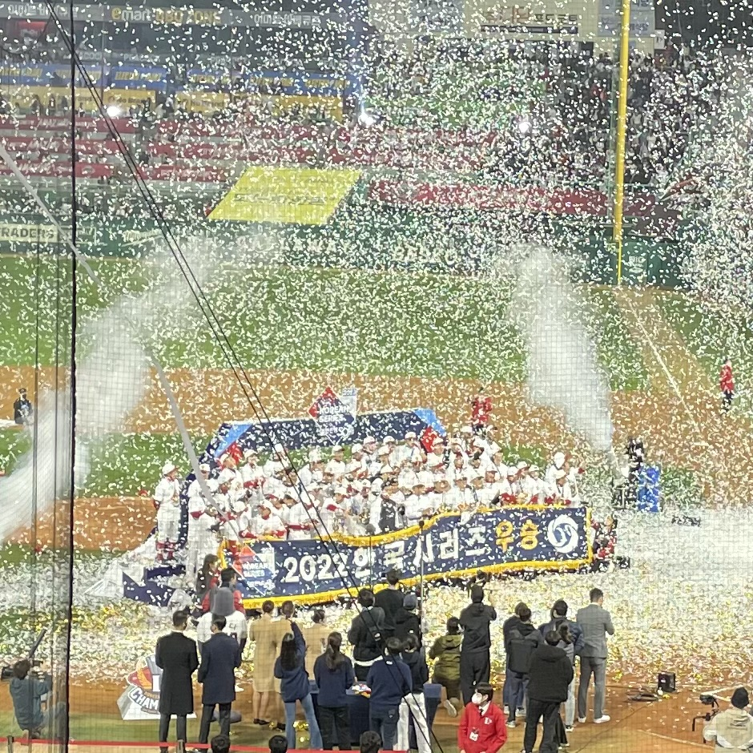

Baseball
저의 취미는 ‘야구 경기 보기’입니다. 고등학생 시절, 야구장이 학교에서 걸어서 10분도 채 안 걸리는 거리에 있었고, 덕분에 저는 야구장에 자주 가게 되었습니다. 처음 야구를 보러 간 날, 팀의 대표 선수가 끝내기 역전 홈런을 치며 팀을 승리로 이끌었고, 그 모습에 반해 야구의 매력에 빠지게 되었습니다. 그 이후로 직접 야구장도 많이 가고, TV 중계도 자주 보는 사람이 되었습니다. 가장 좋아하는 팀은 ‘SSG 랜더스’입니다. 야구팬들이라면 많이들 아시는 '김광현', '최정' 등의 선수들이 속해있는 구단입니다. 이런 선수들의 투혼 덕분에 저는 야구를 볼 때 매우 즐거운 사람이 됩니다.

야구를 보며 가장 좋았던 순간은 한국시리즈 우승을 직관했을 때입니다. 한국시리즈 우승은 날마다 오는 것이 아닙니다. 어떤 팀은 약 30년을 못 보기도 하고, 어떤 팀은 29년 만에 우승하기도 하였습니다. 제가 좋아하는 SSG 랜더스는 2022년, 한국시리즈에서 프로야구 역사상 최초로 ‘와이어 투 와이어’ 우승을 해냈습니다. 한 시즌 동안 단 하루도 빠짐없이 1위 자리를 지키며 우승한 것입니다. 저는 그날 야구장에 갔고, 우승 현장에서 함께하였습니다. 만원관중 경기장 안에서 선수들과 함께 우승의 기쁨을 즐겼을 때 가장 좋았습니다.

만약 야구를 즐기시지 않는다면, 저의 이야기가 조금이라도 흥미가 생겨 함께 야구의 매력을 즐길 수 있었으면 좋겠습니다.